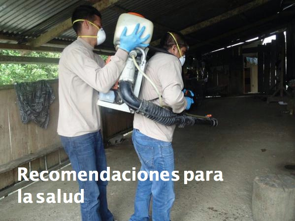

Elimina todo tipo de objetos en desuso que acumulen agua de lluvia o ponlos boca abajo para evitar la proliferación de vectores
Elimina todo tipo de objetos en desuso que acumulen agua de lluvia o ponlos boca abajo para evitar la proliferación de vectores|  |
Recomendaciones para la salud
Elimina todo tipo de objetos en desuso que acumulen agua de lluvia o ponlos boca abajo para evitar la proliferación de vectores
Permite que el fumigador y el personal de salud ingrese a tu casa para las acciones de control.